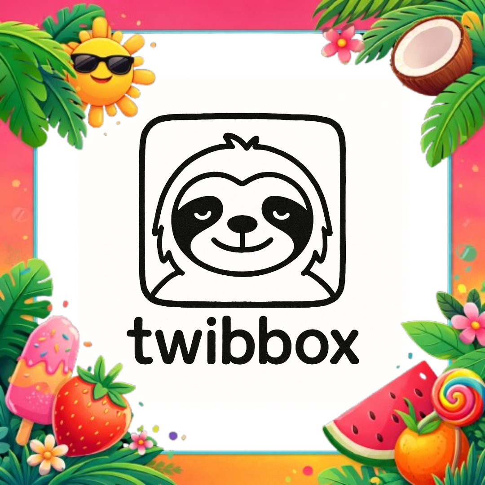
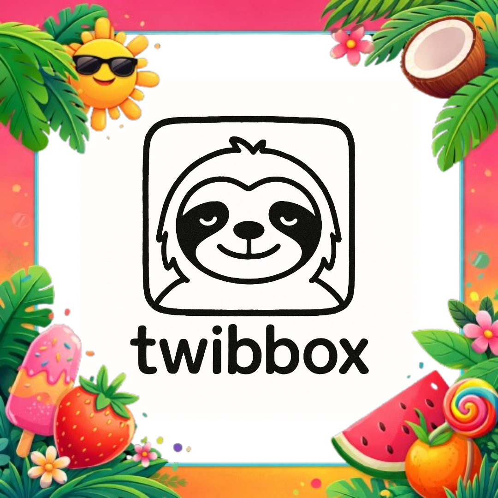

Tentang Twibbox
Twibbox membantu UMKM mengatasi kesulitan membuat konten promosi visual dengan menyediakan template siap pakai, editor gambar lengkap, dan sistem pencarian/filter. Dibangun dengan HTML/CSS/JS murni, tema space galaxy, dan fitur export kualitas tinggi

 

Gallery Media

Video - Demo App
Lihat placeholder video

Adi Kalasa
Full Stack Developer & UI/UX Designer (cuman tugas)
Bekasi, Indonesia
Teknik Informatika - STMIK Mercusuar
1+ tahun pengembangan web
Saya adalah seorang developer dengan passion di bidang web development dan UI/UX design. Twibbox lahir dari keinginan untuk membantu UMKM Indonesia memiliki akses mudah ke alat desain promosi yang profesional dan terjangkau.